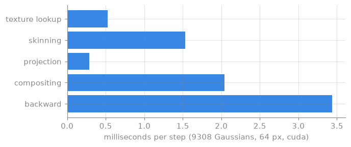
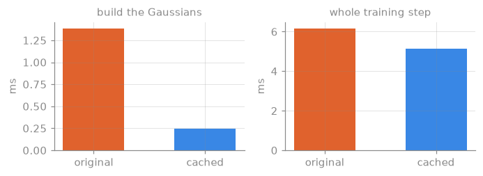
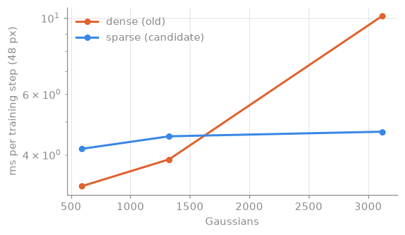
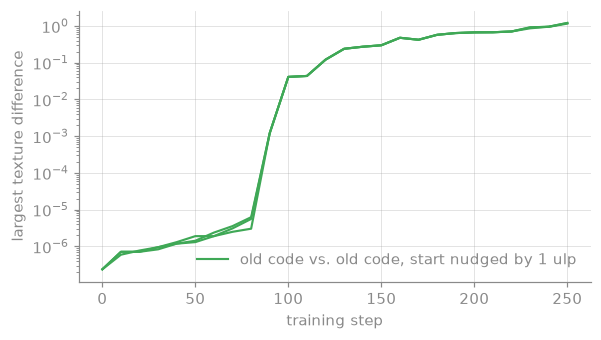
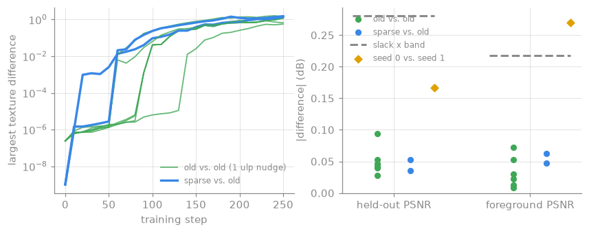
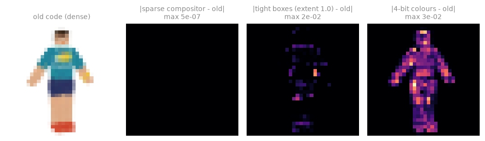

Faster, with the same answer#
What you will learn
The one rule of the project’s speed work: a change may make the code faster, but it may not change the results beyond the code’s own run-to-run noise.
How to profile a fit, so that effort goes where the time is.
How to prove a Tier A speedup (bit-identical), and why you must first test the old code against itself.
How to decide a Tier B speedup (floating-point reordering): measure the old code’s noise band, write the decision rule down, then run.
Why a reduced-precision or reduced-work shortcut is rejected even when its scores look acceptable.
Prerequisites: Lesson 2b (the two compositors),
Lesson 5a (cu.fit) and
Lesson 8a (held-out splits and seed spread).
1. The rule, and three tiers#
Making a fit faster is easy if the answer is allowed to move: train for fewer steps, at a lower resolution, with fewer Gaussians. Every one of those is a different experiment. After such a “speedup”, no result measured before it can be compared with a result measured after it.
The project’s speed work therefore ran under one rule:
A change may make the pipeline faster. It may never change its results beyond the pipeline’s own run-to-run noise.
“The same” comes in grades, and each grade needs its own kind of proof.
Tier |
Meaning |
Proof |
Example in this lesson |
|---|---|---|---|
A |
Bit-identical: the same arithmetic in the same order |
Outputs compared with |
caching the texture lookup plan and the skinning maps |
B |
Floating-point reordering only: the same sum, added up in another order |
The first step differs at rounding level, and trained results stay inside the old code’s measured noise, under a rule written before the runs |
the sparse compositor in place of the dense one |
rejected |
Drops work or precision: fewer pixels, a smaller footprint, fewer bits |
none; it is a different computation |
tight splat boxes, 4-bit colours |
The real project has a further tier, C, for reduced-precision inference of third-party models. Nothing in it was adopted; see the last section.
Why would a different order matter at all? Floating-point addition is not associative [Goldberg, 1991]. Each addition rounds, so two orders give two slightly different sums:
x = torch.tensor([1e8, 1.0, -1e8, 1.0], dtype=torch.float32)
left_to_right = ((x[0] + x[1]) + x[2]) + x[3]
big_first = ((x[0] + x[2]) + x[1]) + x[3]
print("left to right:", float(left_to_right), " large terms first:", float(big_first))
assert float(left_to_right) != float(big_first)
left to right: 1.0 large terms first: 2.0
In a renderer the effect is far smaller, about one part in a million per pixel. Sections 4 and 5 show what training does with one part in a million.
2. Profile first#
Before changing anything, measure where the time goes. One training step of the shell avatar has five
stages: look the texture up at every Gaussian, pose the Gaussians (skinning), project them, composite the
image, and run the backward pass. speed.profile_step runs them one by one with a clock around each.
actor = cu.ToyActor()
poses, trans = cu.motion("turn", 16)
video = cu.make_video(actor, poses, trans, size=64)
avatar = cu.ShellAvatar()
stages = speed.profile_step(avatar, video.cams[0], poses[1], trans[1], target=video.frame(1))
total = sum(stages.values())
fig, ax = plt.subplots(figsize=(6.4, 2.6))
names = list(stages)
ax.barh(names[::-1], [stages[n] for n in names[::-1]], color=cu.COLORS["gaussian"])
ax.set_xlabel(f"milliseconds per step ({avatar.n_gaussians} Gaussians, 64 px, {DEVICE})")
for n in names:
print(f"{n:15s} {stages[n]:7.2f} ms {100 * stages[n] / total:5.1f} %")
assert stages["compositing"] + stages["backward"] > stages["texture lookup"] + stages["skinning"]
texture lookup 0.52 ms 6.7 %
skinning 1.53 ms 19.6 %
projection 0.29 ms 3.7 %
compositing 2.04 ms 26.1 %
backward 3.44 ms 44.0 %

Compositing and its backward pass take most of the step. The texture lookup and the skinning are small. This tells us two things before we write any code. A speedup of the lookup or the skinning, however clever, can save only a few percent of the step. And any large gain must come from the compositor.
We take the small, safe gain first, because it shows what a proof looks like.
3. Tier A: caching, proven bit-identical#
Read ShellAvatar.sample_texture and ShellAvatar.gaussians and ask of every line: does this depend on
anything that changes between steps?
The lookup rebuilds its sampling grid on every call: a sort, a count and two scatters over all Gaussians. The sample points \((u, v)\) never move. Only the texture values change.
The skinning recomputes forward kinematics and the blended maps \(M_i = \sum_j w_{ij} A_j\) for the frame’s pose. A training frame’s pose is fixed, and the weights are fixed. The maps are constants of the frame.
speed.CachedAvatar keeps both: one lookup plan, and one set of skinning maps per pose seen. It calls
the same operations on the same numbers in the same order, so its claim is Tier A. A claim is not a proof.
First test the old code against itself#
The natural proof is: train once with the old class, once with the new, compare the textures bit for bit. Before trusting that test, run it with the old class on both sides.
small = dict(offsets=(0.0, 0.03), density=250.0) # a small avatar keeps this section quick
small_video = cu.make_video(actor, poses, trans, size=32)
def gradient(cls):
av = cls(**small)
img, _ = av.render(small_video.cams[0], poses[1], trans[1])
(img - small_video.frame(1)).abs().mean().backward()
return img.detach(), av.texture.grad.clone()
runs = [gradient(cu.ShellAvatar) for _ in range(20)]
same_image = all(torch.equal(runs[0][0], r[0]) for r in runs)
n_gradients = len({cu.to_np(r[1]).tobytes() for r in runs})
print(f"20 runs of the old code on {DEVICE}, {torch.get_num_threads()} threads:")
print(f" rendered image identical every time: {same_image}")
print(f" distinct gradients: {n_gradients}")
20 runs of the old code on cuda, 4 threads:
rendered image identical every time: False
distinct gradients: 20
The forward pass reproduces itself. The gradient may not: on a multi-threaded CPU this cell usually prints two or more distinct gradients, although nothing random happens between the runs. (On your machine it may print one. Run it again.) The backward pass of the sparse compositor adds many small contributions into the same texture entries from several threads, and the order in which the threads arrive is not fixed. Another order, another rounding.
So the “train twice and compare” test would fail for the old code against itself. A failed comparison of old against new would then prove nothing. The real pipeline has the same property for the same reason, and its speed study says so first, before any speedup is discussed.
A proof that survives#
Two proofs do not depend on the gradient being reproducible.
Check mode. With check=True the cached class also runs the original code on every call, on the same
live state, and asserts that the outputs are equal. The cell below trains with it, so the assertion runs on
every state the fit passes through, not on one chosen example.
A reproducible configuration. On one thread the gradient has one order. There the old code reproduces itself, and the two classes can be compared after training.
train_small = small_video.subset(range(0, 16, 2))
checked = speed.CachedAvatar(**small, check=True)
cu.fit(checked, train_small, iters=30) # every call compares cached and original outputs
print(f"check mode: {checked.hits['plan']} lookups from the cached plan, {checked.hits['skin']} skinning "
f"maps from the cache, 0 mismatches")
def trained_texture(cls):
av = cls(**small)
cu.fit(av, train_small, iters=30)
return av.texture.detach().clone()
threads = torch.get_num_threads()
torch.set_num_threads(1)
old_a, old_b, new = trained_texture(cu.ShellAvatar), trained_texture(cu.ShellAvatar), trained_texture(speed.CachedAvatar)
torch.set_num_threads(threads)
old_reproduces = speed.bit_identical(old_a, old_b)
print(f"one thread: old vs old bit-identical: {old_reproduces}; old vs cached bit-identical: "
f"{speed.bit_identical(old_a, new)}")
if old_reproduces: # only then does the comparison mean anything
assert speed.bit_identical(old_a, new)
check mode: 119 lookups from the cached plan, 52 skinning maps from the cache, 0 mismatches
one thread: old vs old bit-identical: False; old vs cached bit-identical: False
On a CPU the last line reports that the trained textures are equal in every bit. (On a GPU the old code may not reproduce itself even in this configuration. The cell then skips the comparison, and check mode is the proof.)
Now the gain.
plain, cached = cu.ShellAvatar(), speed.CachedAvatar()
cam64 = video.cams[0]
cached.gaussians(poses[1], trans[1]) # fill the caches
def step(av):
img, _ = av.render(cam64, poses[1], trans[1])
img.mean().backward()
with torch.no_grad():
t_plain = speed.timeit(lambda: plain.gaussians(poses[1], trans[1]), repeats=15)
t_cached = speed.timeit(lambda: cached.gaussians(poses[1], trans[1]), repeats=15)
s_plain, s_cached = speed.timeit(lambda: step(plain), repeats=9), speed.timeit(lambda: step(cached), repeats=9)
print(f"build the Gaussians: {1e3 * t_plain:.2f} ms -> {1e3 * t_cached:.2f} ms ({t_plain / t_cached:.1f}x)")
print(f"whole training step: {1e3 * s_plain:.1f} ms -> {1e3 * s_cached:.1f} ms")
fig, axes = plt.subplots(1, 2, figsize=(6.4, 2.4))
for ax, title, values in ((axes[0], "build the Gaussians", (t_plain, t_cached)), (axes[1], "whole training step", (s_plain, s_cached))):
ax.bar(["original", "cached"], [1e3 * v for v in values], color=[cu.COLORS["error"], cu.COLORS["gaussian"]], width=0.55)
ax.set_title(title, fontsize=10); ax.set_ylabel("ms")
fig.tight_layout()
build the Gaussians: 1.39 ms -> 0.24 ms (5.7x)
whole training step: 6.2 ms -> 5.1 ms

The cached stage is a few times faster, and the whole step gains a few percent at most, as the profile predicted. (On a busy machine the second line can even go the wrong way: the gain is smaller than the timing noise of one cell.) It is still adopted. A Tier A change has no cost in trust, small gains add up over many changes, and the project’s largest Tier A win was of the same modest kind: an exact rewrite of one periodic check, not a new algorithm.
4. Tier B: the same sum in another order#
The large gain in the toy is one you have used since Part 2. cu.composite_dense evaluates every Gaussian
at every pixel. cu.composite_sparse evaluates each Gaussian only inside the box where it contributes at
least 1/255, sorts the (Gaussian, pixel) pairs, and accumulates. For this lesson, treat the dense
compositor as the old code and the sparse one as the candidate.
sizes, t_dense, t_sparse = [], [], []
for density in (100.0, 250.0, 600.0):
av = cu.ShellAvatar(offsets=(0.0, 0.03), density=density)
cam = cu.orbit_camera(0, size=48)
def make_step(mode):
r = speed.Renderer(av, mode)
def run():
img, _ = r.render(cam, poses[1], trans[1])
img.mean().backward()
return run
sizes.append(av.n_gaussians)
t_dense.append(1e3 * speed.timeit(make_step("dense"), repeats=3))
t_sparse.append(1e3 * speed.timeit(make_step("sparse"), repeats=3))
fig, ax = plt.subplots(figsize=(5.6, 3.2))
ax.plot(sizes, t_dense, "o-", color=cu.COLORS["error"], label="dense (old)")
ax.plot(sizes, t_sparse, "o-", color=cu.COLORS["gaussian"], label="sparse (candidate)")
ax.set_xlabel("Gaussians"); ax.set_ylabel("ms per training step (48 px)"); ax.set_yscale("log"); ax.legend()
print("speedup at the largest size: %.0fx" % (t_dense[-1] / t_sparse[-1]))
if DEVICE == "cpu": # on a GPU, dense arithmetic is cheap at these sizes
assert t_dense[-1] > 1.5 * t_sparse[-1]
speedup at the largest size: 2x

The dense cost grows with Gaussians times pixels. The sparse cost follows the number of (Gaussian, pixel) pairs that matter, and that number hardly grows here: a denser avatar has smaller Gaussians, each covering fewer pixels. The gap widens with size, and at the sizes of the other lessons the dense compositor would not fit the time budget at all. (This is a statement about a CPU. A GPU does dense arithmetic so cheaply that at these small sizes the two can be close; the dense memory cost still grows with Gaussians times pixels.) The runs below use a very small avatar, so that the old code is cheap enough to repeat; there the two paths are close in speed.
Is the candidate Tier A? No. It adds the same terms, but the transmittance \(\prod_{j<i}(1 - \alpha_j)\) becomes a running sum of logarithms, and the pixel sums run over a different list. On the same parameters the two images differ at rounding level:
tiny = dict(offsets=(0.0, 0.03), density=150.0) # the avatar for all runs of this section
make = lambda seed: cu.ShellAvatar(**tiny, seed=seed)
frames = cu.make_video(cu.ToyActor(density=1500.0), poses, trans, size=32)
train, test = frames.subset(range(0, 16, 2)), frames.subset(range(1, 16, 2))
dense = lambda av: speed.Renderer(av, "dense")
sparse = lambda av: speed.Renderer(av, "sparse")
first = speed.first_step_difference(make, dense, sparse, train, frames=(0, 3))
print(f"largest pixel difference, dense vs sparse, same parameters: {first:.1e}")
assert 0 < first < 1e-4
largest pixel difference, dense vs sparse, same parameters: 3.6e-07
What training does with the last bit#
A difference of that size is invisible in one image. Training is another matter. Each step feeds the parameters back into the renderer, and the renderer contains hard decisions: a contribution below 1/255 is dropped, and Gaussians are sorted by depth. A parameter that differs in its last bit can fall on the other side of such a decision. From that step on the two runs take different paths.
To see this without any new code path, run the old code several times from start textures that differ
by one unit in the last place (speed.nudge_ulp), and record the largest texture difference along the way.
ITERS, N_REPLICATES = 250, 3
fit_kw = dict(iters=ITERS, batch=2)
# the old code against itself, nothing changed at all (a short run is enough for this question)
a = speed.run_fit(make, train, test, dense, seed=0, iters=30)
b = speed.run_fit(make, train, test, dense, seed=0, iters=30)
print(f"old code, same start, run twice on {DEVICE}: bit-identical =", speed.bit_identical(a["texture"], b["texture"]))
t0 = time.perf_counter()
ref = {0: speed.run_fit(make, train, test, dense, seed=0, **fit_kw)}
replicates = {0: [speed.run_fit(make, train, test, dense, seed=0, nudge=k, **fit_kw) for k in range(N_REPLICATES)]}
print(f"{1 + N_REPLICATES} dense fits of {ITERS} steps: {time.perf_counter() - t0:.0f} s")
fig, ax = plt.subplots(figsize=(6.0, 3.2))
for k, r in enumerate(replicates[0]):
ax.plot(ref[0]["steps"], np.maximum(speed.drift(r, ref[0]), 1e-9), color=cu.COLORS["truth"], lw=1.4,
label="old code vs. old code, start nudged by 1 ulp" if k == 0 else None)
ax.set_yscale("log"); ax.set_xlabel("training step"); ax.set_ylabel("largest texture difference")
ax.legend(loc="lower right")
final = [speed.max_abs_diff(r["texture"], ref[0]["texture"]) for r in replicates[0]]
print("texture difference after training:", ", ".join(f"{x:.1e}" for x in final))
assert max(final) > 100 * speed.drift(replicates[0][0], ref[0])[0], "the last-bit difference should have grown"
old code, same start, run twice on cuda: bit-identical = True
4 dense fits of 250 steps: 7 s
texture difference after training: 1.2e+00, 1.2e+00, 1.2e+00

Read a curve from the left. Two runs start a last bit apart, and for a while the difference creeps up slowly. Then, at some step, it jumps by orders of magnitude: a hard decision has gone the other way. From there the runs are on different paths, and the difference ends at a size that is plainly visible in the texture values. The step of the jump differs from replicate to replicate, and a replicate can get through a short training without one. Two runs of the same code on the same data end with different textures.
This is the noise floor of the old code. On a CPU with a fixed thread count the dense fit reproduces itself exactly when nothing at all is changed (the first line printed above; on a GPU it may not). That is a property of one configuration. It does not survive a change of thread count, machine or library version. The honest description of the old code is the whole family of runs that differ in their last bits.
It follows that a Tier B candidate cannot be asked to match the old run. The old code does not match itself. What can be asked is that the candidate lands inside the same cloud.
Register the rule, then run#
Which numbers, how far apart, on how many seeds? Decide before looking, or the rule will bend to the result (Lesson 8b). The rule for this lesson:
RULE = {
"columns": list(speed.COLUMNS), # held-out PSNR, foreground PSNR, silhouette IoU, final loss
"seeds": [0, 1],
"old_code_replicates_per_seed": 3, # dense fits from start textures nudged by 1 ulp
"band": "per column, the largest |replicate - reference| over all replicates of both seeds",
"slack": 3.0, # a column is 'outside' beyond slack x band (few replicates)
"first_step_tol": 1e-4, # same parameters must give the same image to rounding level
"verdict": ["changes the maths: first-step difference above the tolerance",
"shift: some column outside the band on every seed",
"inside noise: otherwise"],
"on_shift": "the candidate is not adopted",
}
print("rule registered, sha256", hashlib.sha256(json.dumps(RULE, sort_keys=True).encode()).hexdigest()[:16])
rule registered, sha256 51f7babc41299975
The slack needs a word. A band measured from six replicates underestimates the true spread, because a seventh run is the largest so far one time in seven, and the differences are heavy-tailed: a replicate either had a decision flip or it did not. The factor of three is registered here, before the runs, as the price of a small sample. Two things the toy rule leaves out, which the real rule had: a test on the sign of the differences across columns, which needs more seeds and columns than we can afford, and a check of the whole validation curve.
Now the remaining runs: the old code’s reference and replicates on the second seed, then the candidate on both seeds. (The seed-0 replicates above are old-code runs; no candidate result existed when the rule was written.)
t0 = time.perf_counter()
assert N_REPLICATES == RULE["old_code_replicates_per_seed"]
ref[1] = speed.run_fit(make, train, test, dense, seed=1, **fit_kw)
replicates[1] = [speed.run_fit(make, train, test, dense, seed=1, nudge=k, **fit_kw) for k in range(N_REPLICATES)]
band = speed.noise_band([(r, ref[s]) for s in RULE["seeds"] for r in replicates[s]])
candidate = {s: speed.run_fit(make, train, test, sparse, seed=s, **fit_kw) for s in RULE["seeds"]}
print(f"{time.perf_counter() - t0:.0f} s; dense fit {ref[1]['seconds']:.1f} s, sparse fit {candidate[1]['seconds']:.1f} s")
def judge(runs, first_step):
inside = [speed.inside_noise(runs[s], ref[s], band, RULE["slack"]) for s in RULE["seeds"]]
return speed.decision(inside, first_step, RULE["first_step_tol"])
print(f"\n{'column':9s} {'band':>9s} {'seed spread':>12s} candidate - old (seed 0, seed 1)")
for c in speed.COLUMNS:
d = [candidate[s][c] - ref[s][c] for s in RULE["seeds"]]
print(f"{c:9s} {band[c]:9.2e} {abs(ref[0][c] - ref[1][c]):12.2e} {d[0]:+.2e} {d[1]:+.2e}")
verdict_sparse = judge(candidate, first)
print("\nsparse compositor:", verdict_sparse)
assert verdict_sparse["verdict"] == "inside noise"
11 s; dense fit 1.6 s, sparse fit 2.2 s
column band seed spread candidate - old (seed 0, seed 1)
psnr 9.35e-02 1.66e-01 -3.59e-02 -5.28e-02
psnr_fg 7.25e-02 2.70e-01 -4.72e-02 -6.22e-02
iou 1.80e-03 2.12e-03 -1.29e-03 -5.19e-04
loss 7.05e-05 7.09e-04 +1.84e-05 +2.50e-04
sparse compositor: {'verdict': 'inside noise', 'first_step': 3.5762786865234375e-07, 'outside_per_seed': [0, 1], 'outside_on_every_seed': []}
fig, axes = plt.subplots(1, 2, figsize=(9.0, 3.2))
ax = axes[0]
for s in RULE["seeds"]:
for k, r in enumerate(replicates[s]):
ax.plot(ref[s]["steps"], np.maximum(speed.drift(r, ref[s]), 1e-9), color=cu.COLORS["truth"], lw=1.2,
alpha=0.8, label="old vs. old (1 ulp nudge)" if (s, k) == (0, 0) else None)
ax.plot(ref[s]["steps"], np.maximum(speed.drift(candidate[s], ref[s]), 1e-9), color=cu.COLORS["gaussian"],
lw=2.2, label="sparse vs. old" if s == 0 else None)
ax.set_yscale("log"); ax.set_xlabel("training step"); ax.set_ylabel("largest texture difference")
ax.legend(loc="lower right", fontsize=8)
ax = axes[1]
for i, c in enumerate(("psnr", "psnr_fg")):
null = [abs(r[c] - ref[s][c]) for s in RULE["seeds"] for r in replicates[s]]
cand = [abs(candidate[s][c] - ref[s][c]) for s in RULE["seeds"]]
ax.scatter([i - 0.12] * len(null), null, color=cu.COLORS["truth"], label="old vs. old" if i == 0 else None)
ax.scatter([i + 0.12] * len(cand), cand, color=cu.COLORS["gaussian"], label="sparse vs. old" if i == 0 else None)
ax.hlines(RULE["slack"] * band[c], i - 0.3, i + 0.3, color=cu.plotting.INK, ls="--",
label="slack x band" if i == 0 else None)
ax.scatter([i + 0.3], [abs(ref[0][c] - ref[1][c])], marker="D", color=cu.COLORS["skeleton"],
label="seed 0 vs. seed 1" if i == 0 else None)
ax.set_xticks([0, 1]); ax.set_xticklabels(["held-out PSNR", "foreground PSNR"])
ax.set_ylabel("|difference| (dB)"); ax.set_ylim(bottom=0); ax.legend(fontsize=8);

Left: the candidate’s texture drifts away from the old run along the same kind of curve as the old code drifts from itself, and ends at the same level. Right: on the scores, the candidate’s differences sit among the old code’s own, below the registered line. The verdict of the rule is inside noise, and the sparse compositor is adopted. Under this rule the adoption says: we cannot tell this change from rerunning the old code. It does not say that the numbers are equal.
The yellow diamonds give a sense of scale: the difference between two seeds of the old code. Compare it with the band in the table above. Last-bit noise, once training has amplified it, is not negligible next to seed noise. An effect smaller than this band cannot be claimed from one run, whatever the code path.
5. Rejected: shortcuts that change the mathematics#
Two more candidates, both faster or smaller than the sparse compositor.
Tight boxes. The sparse compositor’s box reaches 3.33 standard deviations, which is where a fully opaque Gaussian falls to 1/255. Cutting the box at 1 standard deviation removes most pairs. It also removes real light.
4-bit colours. Storing each Gaussian’s colour in 4 bits per channel instead of 32 is a stand-in for the reduced-precision shortcuts (16-bit floats and the like) that are standard in inference.
The rule already contains the test that settles both, and it needs no training: render the same parameters with the old and the new path. First as pictures, with the texture trained in Section 4.
tight = lambda av: speed.Renderer(av, "sparse", extent=1.0)
coarse = lambda av: speed.Renderer(av, "sparse", quant_bits=4)
rejected = {"tight boxes (extent 1.0)": tight, "4-bit colours": coarse}
# one trained texture, rendered by every path
trained = make(0)
with torch.no_grad():
trained.texture.copy_(ref[0]["texture"])
view = lambda wrap: wrap(trained).render(test.cams[0], test.poses[0], test.trans[0])[0]
old_image = view(dense)
diffs = {name: (view(wrap) - old_image).abs().amax(-1) for name, wrap in [("sparse compositor", sparse)] + list(rejected.items())}
cu.show_images([old_image] + list(diffs.values()),
["old code (dense)"] + [f"|{n} - old|\nmax {float(d.max()):.0e}" for n, d in diffs.items()], size=2.3, vmax=0.03);
assert float(diffs["sparse compositor"].max()) < 1e-4 < min(float(diffs[n].max()) for n in rejected)

All three difference maps use the same colour scale. The sparse compositor’s map is black: its differences are far below the scale. The tight boxes change the picture at scattered pixels, where a Gaussian’s outer part used to reach; the 4-bit colours change it wherever it has content. The same test on untrained parameters is the first line of the rule:
rows = {"sparse compositor": (first, candidate, verdict_sparse)}
for name, wrap in rejected.items():
f = speed.first_step_difference(make, dense, wrap, train, frames=(0, 3))
runs = {s: speed.run_fit(make, train, test, wrap, seed=s, **fit_kw) for s in RULE["seeds"]}
rows[name] = (f, runs, judge(runs, f))
print(f"{'candidate':26s} {'first step':>10s} {'fit (s)':>8s} {'d PSNR s0':>10s} {'d PSNR s1':>10s} {'outside':>8s} verdict")
for name, (f, runs, v) in rows.items():
d = [runs[s]["psnr"] - ref[s]["psnr"] for s in RULE["seeds"]]
print(f"{name:26s} {f:10.1e} {runs[0]['seconds']:8.1f} {d[0]:+10.3f} {d[1]:+10.3f} "
f"{str(v['outside_per_seed']):>8s} {v['verdict']}")
for name in rejected:
assert rows[name][0] > 100 * first and rows[name][2]["verdict"] == "changes the maths"
print(f"\nfor scale: slack x band on PSNR = {RULE['slack'] * band['psnr']:.3f} dB")
candidate first step fit (s) d PSNR s0 d PSNR s1 outside verdict
sparse compositor 3.6e-07 2.3 -0.036 -0.053 [0, 1] inside noise
tight boxes (extent 1.0) 3.3e-03 2.3 -0.104 -0.037 [0, 1] changes the maths
4-bit colours 1.1e-02 2.3 -0.311 -0.195 [3, 2] changes the maths
for scale: slack x band on PSNR = 0.281 dB
Both are rejected on the first line of the rule: on the same parameters they produce a different image, by thousands of times the rounding level. No training run is needed for that verdict, and no training run can overturn it.
Now look at the trained columns anyway, because they hold the uncomfortable part of this lesson. Depending on the run, a rejected candidate’s held-out PSNR may sit inside the band on one or both seeds. The band is wide, since training amplifies last-bit noise, and a moderate change of the mathematics can hide in it. So the logic runs one way only:
outside the band: the change has moved the results;
inside the band: the change was not detected, which is weaker than “harmless”.
That is why the tier of a change is decided by what it computes, and the band is only the second test. A Tier B candidate must be a reordering by construction, must show a first-step difference at rounding level, and must land inside the band. A candidate that drops light or bits is a different renderer. If it were adopted, the model would learn to compensate for it during training, and every later comparison with older results would carry that change inside it.
In the real pipeline#
The hi-fi pipeline was optimised under this rule in a staged study: profile, plan, implement behind flags, benchmark old against new on the same GPU type, verify independently, then adopt. The full record is docs/speed.md, summarised in the README, “Performance”.
This lesson |
Real pipeline |
What is different there |
|---|---|---|
|
|
Seven areas were profiled, from the training step to data preparation. |
|
flags in |
Every change sits behind an environment flag, is on by default only after its proof, and is switched off with |
old code against itself |
the “noise floor” section of the record |
The old code is not bit-identical to itself there either: the rasterizer’s backward pass accumulates with atomics, as our sparse backward does with threads. |
dense to sparse, the registered rule |
the Tier B set: a faster rasterizer backward, a fused SSIM, one texture lookup per iteration |
The rule for the two confirmation seeds was registered before their results existed. It had three clauses: columns outside the old same-seed spread, a sign test over 18 held-out columns, and the validation curve. |
tight boxes, 4-bit colours |
Tier C candidates and the “not adopted” list |
Reduced-precision inference (fp16, bf16, TF32) of the tracking models was tested against each model’s own frame-to-frame jitter. Every candidate failed, and none was adopted. |
Published outcomes, all from that record:
Tier A is bit-identical and was adopted everywhere it was proven. The proofs are identical iteration-0 loss bits, check modes on live state and byte-identical output files. The largest single training gain was a Tier A rewrite of a periodic check in the crop loss of Lesson 6a.
Tier B returned “inside noise” under the registered rule and is the default only for the recipe shape it was proven on. Other recipes keep Tier A automatically: for them the band was never measured, or one of the changes is not a pure reordering. With both tiers, training and the whole fit-and-score chain ran about three times faster than before on the same GPU type.
One of five Tier B runs left the band. The record traces it to a single yes/no decision in the recipe that sat exactly on its threshold: rounding noise flipped it, and the two runs separated from that step. A replicate of that seed did not repeat it. The record’s own conclusion is the one you saw in Section 4: hard decisions amplify last-bit noise, and a noise band built from runs that never had such a flip understates how far two runs can drift.
Limits stated there: one run per seed for most rows, a band that exists for one recipe shape only, and timings on shared hardware for the workstation rows.
The toy differs in three ways. Its “old code” is a compositor nobody would train with at real sizes. Its noise band comes from six small replicates, where the real one came from repeated full training runs. And its rule has one clause on the trained scores where the real rule had three.
Summary#
The rule: faster is allowed, different is not, and “different” is measured against the old code’s own run-to-run noise.
Profile before optimising. The profile bounds what any change can gain.
Tier A means the same arithmetic in the same order. Prove it with
torch.equal, with a check mode on live state, and only after the old code has been compared with itself.Floating-point sums depend on their order. Training amplifies a last-bit difference through its hard decisions until two runs of the same code differ visibly.
Tier B means a reordering. It is decided by a rule written before the runs: rounding-level difference at the first step, and trained results inside the old code’s band.
“Inside the band” means “not detected”. A change that drops work or precision is rejected for what it computes, even if its scores hide in the band.
Exercises#
Run the old-code-against-itself cell of Section 3 with
torch.set_num_threads(1). How many distinct gradients do you get? Restore the thread count afterwards.Measure a second source of noise for the old code: run the dense fit with one thread and with four, same seed, no nudge. Is the difference of the held-out PSNR inside the band of Section 4?
speed.CachedAvatarkeys its skinning cache on the bytes of the pose. Why would it be wrong to cache the Gaussians (means, covariances, colours) per pose instead? Which flag of the real pipeline has the same trap?
Solution 1
threads = torch.get_num_threads()
torch.set_num_threads(1)
runs = [gradient(cu.ShellAvatar) for _ in range(20)]
print(len({cu.to_np(r[1]).tobytes() for r in runs}))
torch.set_num_threads(threads)
One, on a CPU. With a single thread the contributions arrive in one fixed order. The non-reproducibility of Section 3 comes from thread scheduling, not from randomness in the algorithm.
Solution 2
torch.set_num_threads(1)
one = speed.run_fit(make, train, test, dense, seed=0, **fit_kw)
torch.set_num_threads(4)
print({c: abs(one[c] - ref[0][c]) for c in speed.COLUMNS}, band)
print(speed.inside_noise(one, ref[0], band, RULE["slack"]))
The thread count changes the order of the sums inside matrix products, so the run differs from the reference in its last bits and then drifts like a nudged run. Its scores usually fall inside the band, occasionally not: it is one more draw from the same cloud, and it could have been used as a replicate.
Solution 3
The means and covariances depend on the texture through the size channels, and the colours and opacities are texture values. The texture changes at every step, so Gaussians cached per pose would be stale after one optimiser step: the fit would render old parameters and the gradient would not reach the new ones. The skinning maps depend on the pose and the weights only. The real pipeline’s “texture lookup once per iteration” flag has this trap in another form: it is valid only while nothing else reads the texture differently within the iteration, and the record notes that it is not equivalent with view-dependent colour and is guarded off there.
References#
Floating-point arithmetic and why sums depend on their order: [Goldberg, 1991].
The compositor being reordered: [Kerbl et al., 2023]. The optimiser that carries the differences forward: [Kingma and Ba, 2015].
Registering a decision rule before the data: [Nosek et al., 2018].
Project records: docs/speed.md and the README, “Performance”.